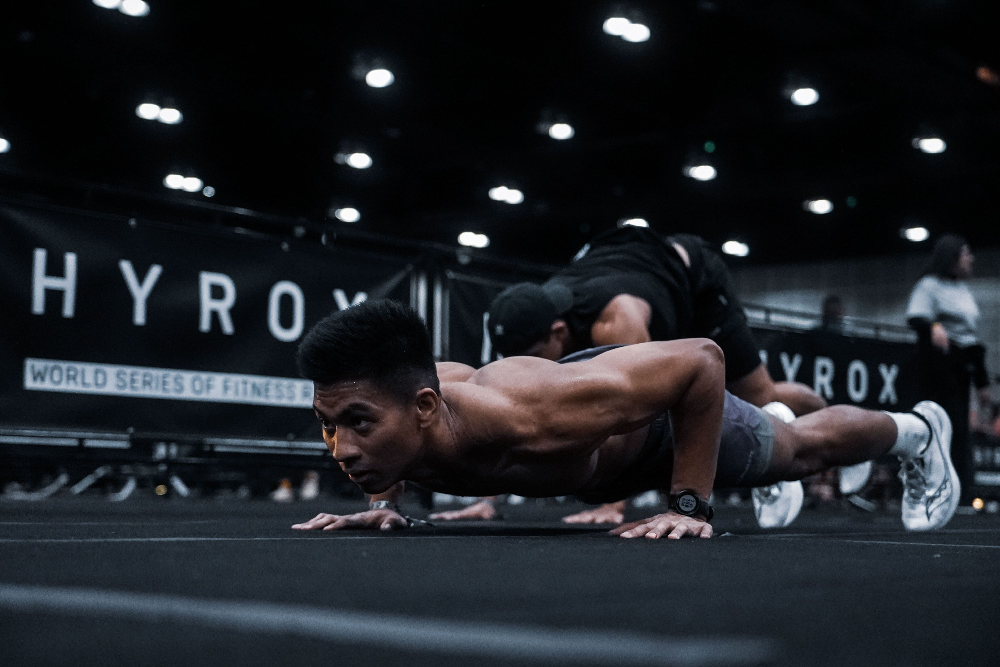

Kyle Elecanal

Summary
I am aspiring Web Developer, on my journey in learning to self code so that one day I can build exciting and useful things that many people can use and enjoy!
I am hard working individual that pogreat interpersoanal skills. Being about bring a positive attitude to any environment while possessing to grit and tenacity in working toward goals and duty.
Education
- Current Student at University of California, Irvine- BA of International Studies
Work Experience
Recovery Lab Technician- Club Studio
November 2022- July 2024
- Make sales of the Recovery Lab buy giving tours and trials of the equipment.
- Provide a welcoming environment to guests and clients while maintaning the space cleanliness.
- Operated Recovery Certified equipment and serviced clients with cryotherpy sessions.
Sale Associate- J.Crew
March 2021- January 2023
- Assist clients with grabbing sizes, advising on stylist choices and trends.
- Used POS system to ring up and order additional pieces of clothing in a timely manner.
- Took charge of a specfic area of the store, greeting and assisting guests and folding and tidying up clothes in down time.
Skills
- HTML
- CSS
- Problem Solving
- Communication
- Attitude to Learn
- Team Player
Other